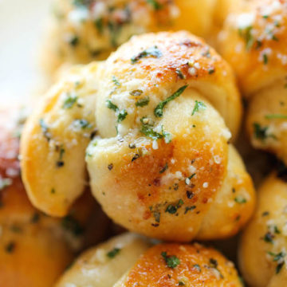

Home
Garlic Knots

Description
They're unbelievably flaky, buttery, fluffy and they just melt in your mouth.
They were so good that after devouring 4 of these in less than 5 minutes,
I had to tell Jason to hide them somewhere in the house so I wouldn't eat
the entire batch!
Ingredients
- 1/4 cup unsalted butter, melted
- 2 tablespoons freshly grated Parmesan
- 3/4 teaspoon garlic powder
- 1/2 teaspoon dried oregano
- 1/2 teaspoon dried parsley flakes
- 1/4 teaspoon salt
- 1 (16-ounce) tube refrigerated buttermilk biscuits
Steps
- Preheat oven to 400 degrees F. Lightly oil a baking sheet or coat with nonstick spray.
- In a small bowl, whisk together butter, Parmesan, garlic powder, oregano, parsley and salt; set aside.
- Halve each of the 8 biscuits, making 16 pieces. Roll each piece into a 5-inch rope, about 1/2-inch thick, and tie into a knot, tucking the ends.
- Place knots onto the prepared baking sheet and brush each knot with half of the butter mixture. Place into oven and bake until golden brown, about 8-10 minutes.
- Serve immediately, brushed with remaining butter mixture.